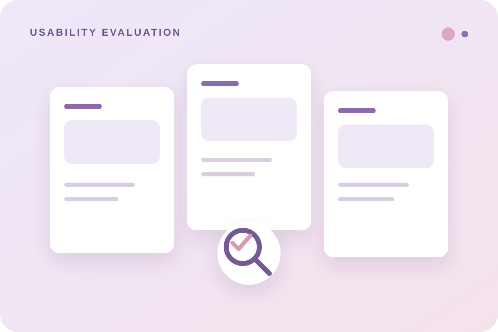

2 — UX RESEARCH · USABILITY EVALUATION
Donation Platforms
A course project evaluating the usability of quick-donation experiences across three digital platforms.

A university course project focused on evaluating the quick-donation service across Ehsan, Naja, and Shifaa. The work centered on usability evaluation rather than redesign.
The evaluation used Nielsen’s 10 heuristics, think-aloud testing, SUS, eye tracking through RealEye, and KLM / TLM / GOMS.
I participated in evaluating all three platforms, documented and analyzed usability issues, and took roles including facilitator, evaluator, and recorder during the evaluation activities.
The project resulted in a structured usability evaluation and a clearer understanding of how different evaluation methods reveal friction in a digital service.